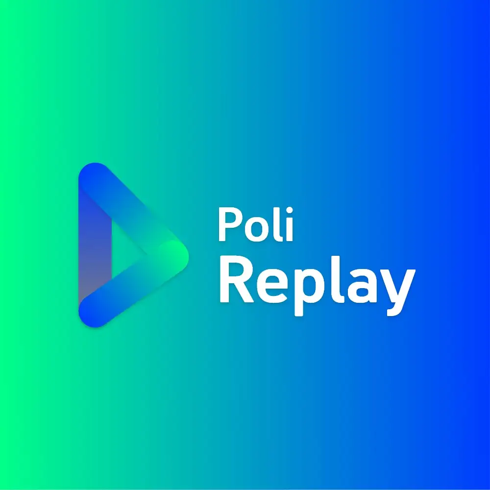
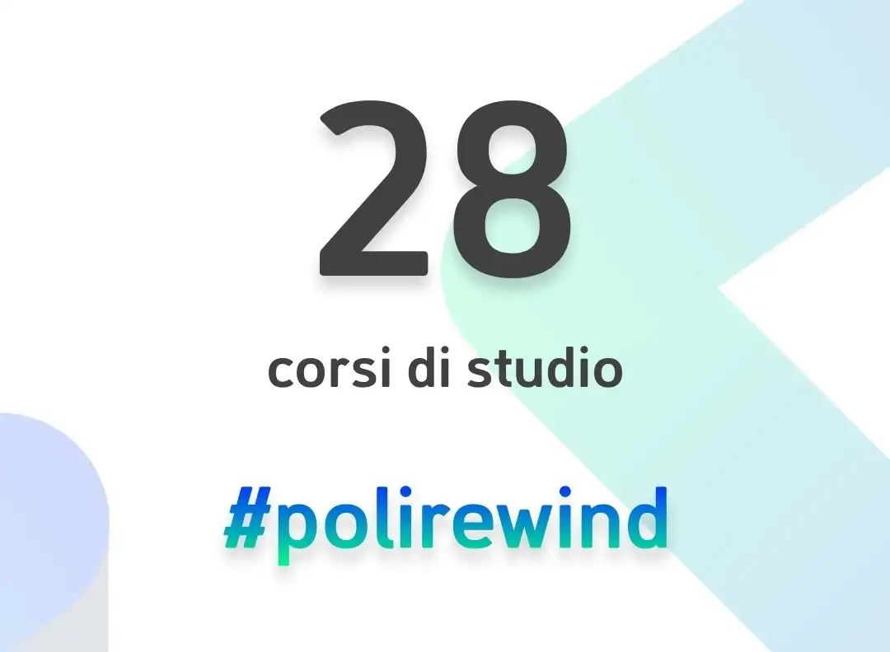
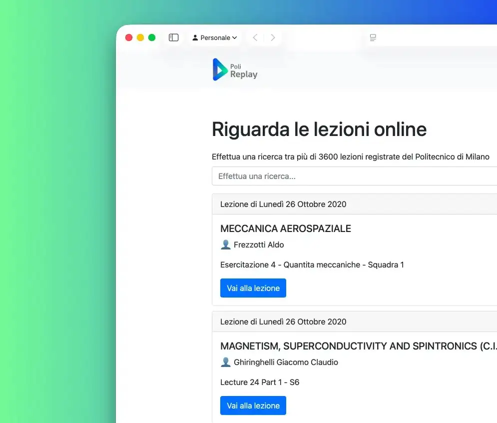
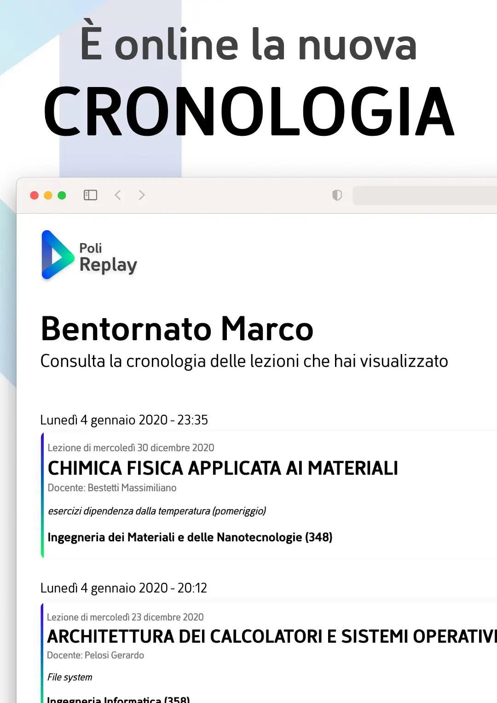

PROJECT
PoliReplay
PoliReplay is a personal project developed to simplify access to online lecture recordings at Politecnico di Milano. Initially created to solve a student need, it later became an official platform of the university, reaching tens of thousands of daily users.
2020
Segato Niccolò
No profit



PoliReplay
2020 - Politecnico di Milano
